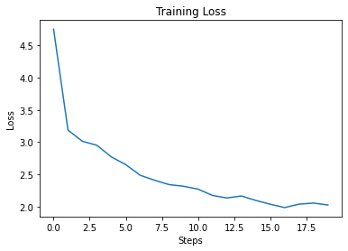

import torch
import torch.nn as nn
import random
import numpy as np Introduction
The only reason you would be hearing RNNs right now is probably when xLSTMs were released in May, 2024. Apart from this they have pretty much taken a back seat to watch transformers revolutionalize NLP and the entire field of AI in general.
But one would do well to remember how we got here, and RNNs played a massive role in bringing us here. So in this blog post I’m going to build a small RNN model and we’ll try to train it to generate text.
Import data and process it
Let us load a text dataset. I downloaded a few mystery books and concatenated their raw text to make the dataset. Follow this link to get the text file.
dataset_path = "./corpus.txt"
with open(dataset_path, 'r') as f:
data = f.read()Lets have a look at some of the text we have.
show code
print(f"Sample data chunk:\n'{data[1000:1500]}'")Sample data chunk:
'rld has seen, but as a lover he would have placed himself in a
false position. He never spoke of the softer passions, save with a gibe
and a sneer. They were admirable things for the observer—excellent for
drawing the veil from men’s motives and actions. But for the trained
reasoner to admit such intrusions into his own delicate and finely
adjusted temperament was to introduce a distracting factor which might
throw a doubt upon all his mental results. Grit in a sensitive
instrument, or a crack i'Lets split the data into train and test (80-20)
show code
train_size = int(len(data) * 0.8)
train_data, test_data = data[:train_size], data[train_size:]
print(f"train_size: {len(train_data)}, test_size: {len(test_data)} (in number of tokens)")train_size: 2449724, test_size: 612431 (in number of tokens)Now let us encode the text to numerical data that our model can understand. Encoding the data generally means tokenization and then encoding. To keep it super simple, we’ll just use individual characters as tokens.
Nowadays however, subword tokenization algorithms like Byte-Pair Encoding are the norm. But let us not get caught up in those for now.
# Define the vocabulary and special tokens
vocab = list(set(train_data+"12345678910qwertyuioplkjhgfdsamnbvcxz~!@#$%^&*()_+`-=[];'./,{}\":?><\|"))
PAD_TOKEN = '<pad>'
special_tokens = [PAD_TOKEN]
MAX_SEQ_LEN = 32
vocab = [*special_tokens, *vocab]
# Create mappings for encoding and decoding
decode_mapping = dict(enumerate(vocab))
encode_mapping = {v:k for k,v in decode_mapping.items()}
# Define encoding and decoding functions
encode = lambda text: [encode_mapping[char] for char in text]
decode = lambda text: [decode_mapping[char] for char in text]Now we can do a simple sanity check by encoding a text and decoding it. we should get the original string back.
show code
text = "hey there"
encoded_text = encode(text)
print(f"original text: {text}")
print(f"tokenized text: {list(text)}")
print(f'encoded text: {encoded_text}')
print(f"decoded back:{decode(encoded_text)}")original text: hey there
tokenized text: ['h', 'e', 'y', ' ', 't', 'h', 'e', 'r', 'e']
encoded text: [74, 66, 31, 53, 104, 74, 66, 24, 66]
decoded back:['h', 'e', 'y', ' ', 't', 'h', 'e', 'r', 'e']Now we need functions that will do this for batches of texts rather than single text. When dealing with batches, there are a few extra considerations: - You would typically want your batches to contain texts which are of same length, so that matrix/tensor operations can be performed. Hence we need to truncate longer sentences and pad shorter sentences to a fixed length.
For simplicity let us also define a function that will fetch us a random batch of data from our training set.
def get_data(data, batch_size=16, seq_len=256):
"""
Retrieves input and target data for training a recurrent neural network (RNN).
Args:
data (list): The input data.
batch_size (int, optional): The number of sequences in each batch. Defaults to 16.
seq_len (int, optional): The length of each sequence. Defaults to 256.
Returns:
tuple: A tuple containing the input and target data tensors.
- inputs (torch.Tensor): The input data tensor.
- targets (torch.Tensor): The target data tensor.
"""
buffer = 1000
l = len(data)
start = np.random.randint(0, l - buffer, size=batch_size)
end = start + seq_len
texts = [data[s:e] for s, e in zip(start, end)]
encoded_texts = encode_arr(texts, max_seq_len=seq_len + 1)
targets = encoded_texts[:, 1:]
inputs = encoded_texts[:, :-1]
targets = torch.tensor(targets, dtype=torch.long)
inputs = torch.tensor(inputs, dtype=torch.long)
return inputs, targets
show code
x, y = get_data(train_data, 4, 23)
print("target is just x shifted one token to the left!")
print(f"x[0]: {x[0]},\ny[0] {y[0]}")target is just x shifted one token to the left!
x[0]: tensor([ 0, 53, 104, 74, 48, 26, 45, 74, 104, 53, 17, 66, 24, 74,
47, 17, 80, 94, 53, 53, 53, 53, 53]),
y[0] tensor([ 53, 104, 74, 48, 26, 45, 74, 104, 53, 17, 66, 24, 74, 47,
17, 80, 94, 53, 53, 53, 53, 53, 53])RNNS
Now before modelling, let us look at a RNN layer and understand its input and outputs. Each RNN layer has the following basic archtecture:

Understanding RNNs
RNNs have 2 matrices, one (W_{xh}) that maps input tokens to hidden_vector size and another (W_{hh}) that maps from hidden_vector to hidden_vector. You’ll see how these are used in a minute.
Let us first look at input-output shapes for an RNN layer. We initially had a batch of text-tokens. Lets assume batch size of 4 and max_seq_len of 32. Hence the shape of input is (4,32).
Now for each token, we encode it to a number and then map it to a vector (which we generally call an embedding). Hence each token is now represented by a vector of fixed-shape, and lets call this embedding_dimension and set it to 10.
The shape of our input batch is now (batch_size, max_seq_len, emb_dim), ie (4,32,10).
Now let us peek into the matrix multiplications inside a RNN layer. Firstly, lets us recall that for a linear layer, this is the matrix equation:
z (N, n_{out}) = \sigma(x (N, n_{in}) * W_x^T (n_{in}, n_{out}) + b (N))
where ,
- input-features = n_{in}
- output-features = n_{out}
- batch-size = N
In a linear layer, each token/feature is attended to by a different weight in the weight matrix and no information is shared among the sequence tokens. But when processing “sequences” we obviously want the model to remember stuff from previous tokens for the current token, right?
Hence RNNs maintain a hidden_vector for each token, that takes as input the current token and the hidden_vector from the previous token’s output.
So for the t’th token,
h_t (N, h)= x_t (N, n_{in}) * W_{xh}^T (n_{in}, h) + h_{t-1} (N, h) * W_{hh}^T (h, h) + biases
where
- input-features = n_{in}
- hidden-size = h
- batch-size = N
- sequence-length = s
As you’ll notice since each token depends on previous tokens output, we cannot process this parallelly and have to iteratively calculate the output for each token. Also note we generally refer to the different tokens in a sequence as different timesteps, ie token at timestep t is x_t.
Hence for a complete batch, inputs are:
- X of shape (N, s, n_{in})
- h_0 of shape (N, h) (this is optional, if not given most libraries will initiate a h_0 of all zeros or random numbers)
And outputs are:
- hidden states of all timesteps, ie H of shape (N, s, h)
- last_hidden_state ie h_n of shape (N, h)
Note: sometimes you will see outputs of rnn fed into a linear layer like so,
outputs, h_n = self.rnn(x)
y = self.fc(outputs[:,-1,:])Here h_n and outputs[:,-1,:] are the same thing. They both represent the last hidden state for the entire batch. (to make shapes equal use h_n.squeeze())
Lets verify the above by passing inputs to an rnn layer.
show code
emb_dim = 50
hidden_size = 100
batch_size = 4
max_seq_len = 256
print(f"batch_size: {batch_size}, hidden_size: {hidden_size}, max_seq_len: {max_seq_len}, emb_dim: {emb_dim}")
X,y = get_data(train_data, seq_len=max_seq_len, batch_size=batch_size)
print(f"shape of initial input -> {X.shape}")
emb_layer = nn.Embedding(num_embeddings=len(vocab), embedding_dim=emb_dim)
rnn_layer = nn.RNN(input_size=emb_dim, hidden_size=hidden_size, batch_first=True, bidirectional=False, num_layers=1)
X = emb_layer(X)
print(f"post embedding; shape of input to RNN layer -> {X.shape}")
h_0 = torch.randn(1, batch_size, hidden_size)
outputs = rnn_layer(X, h_0)
print(f"RNN output shapes -> {outputs[0].shape}, {[outputs[1][i].shape for i in range(len(outputs[1]))]}")batch_size: 4, hidden_size: 100, max_seq_len: 256, emb_dim: 50
shape of initial input -> torch.Size([4, 256])
post embedding; shape of input to RNN layer -> torch.Size([4, 256, 50])
RNN output shapes -> torch.Size([4, 256, 100]), [torch.Size([4, 100])]Language Modelling
Now let us build a model and train it. For starters we’ll just use a torch.nn.RNN layer to build the model and train it. Once we get the entire training and testing pipeline complete, we can come back and build the model from scratch.
How exactly can we generate text though?
We know we can get hidden states of the entire sequence as outputs from a rnn layer, but each hidden state h_t has ponly seen information till timestep t. What we can do is this:
- only use the last hidden state and feed it to a linear layer with output shape equal to size of vocabulary.
- if softmax is applied on top of the linear layer’s output, it turns raw logits into the probabilities for different tokens in our vocab. This can be done outside the forward function too.
Now each input sequence gives us one output token ie y_{t+1}. then we can take the sequence from 1 to t+1 and generate token y_{t+2}.
During Training
To maximize training we can use all hidden state outputs instead of the last one. Because why wouldnt we want the model to learn from all its outputs!
- output of rnn layer of shape (N, s, h) is fed into a linear layer of shape (h, vocab\_size) to get (N,s,vocab\_size) outputs. then we can pass them via softmax and apply cross-entropy loss on all of them and backpropagate through the model.
- since at token level we now have N*s tokens on which we will calculate loss, its simpler to flatten the targets and generated logits before passing to cross-entropy loss.
Note: Had it been a classification task, we could just pass last hidden_state, h_n to a linear layer with output size equal to number of classes.
The model
class Rnn_model(nn.Module):
def __init__(self, embedding_size, max_seq_len, hidden_size, num_layers=1, vocab_size=None):
"""
Initializes the Rnn_model class.
Args:
embedding_size (int): The size of the embedding dimension.
max_seq_len (int): The maximum sequence length.
hidden_size (int): The size of the hidden state dimension.
num_layers (int, optional): The number of recurrent layers. Defaults to 1.
vocab_size (int, optional): The size of the vocabulary. Defaults to None.
"""
super(Rnn_model, self).__init__()
self.max_seq_len = max_seq_len
self.vocab_size = len(vocab) if vocab_size is None else vocab_size
self.embedding = nn.Embedding(num_embeddings=self.vocab_size, embedding_dim=embedding_size)
self.rnn = nn.RNN(input_size=embedding_size, hidden_size=hidden_size, batch_first=True, num_layers=num_layers)
self.fc = nn.Linear(hidden_size, len(vocab))
self.softmax = nn.Softmax(dim=-1)
self.criterion = nn.CrossEntropyLoss(ignore_index=0) # ignore pad token
def forward(self, x, targets=None):
"""
a forward pas thorugh the model.
x: input torch tensor (B,T,S)
targets: input targets (B,T,S)
Returns
(model output logits, loss)
"""
x = x[:, -self.max_seq_len:]
x = self.embedding(x)
H, h_n = self.rnn(x)
# y = self.fc(H[:,-1,:])
y = self.fc(H)
if targets is not None:
B, T, V = y.shape
loss = self.criterion(y.view(B*T, V), targets.view(-1))
else: loss=None
return y, loss
@torch.no_grad
def generate(self, input_text, max_len=32):
"""
input_text: a string or list of strings to generate text using the model.
max_len: model will generate maximum of max_len tokens.
"""
encoded_tokens = torch.tensor(encode_arr([input_text], max_seq_len=32))
if encoded_tokens.ndim == 1:
encoded_tokens = encoded_tokens.unsqueeze(0)
for i in range(max_len):
outputs, _ = self(encoded_tokens[:, -self.max_seq_len:])
# last output token
outputs = outputs[:, -1, :]
# get pribabilities from logits
next_token_probs = nn.functional.softmax(outputs, dim=-1)
# sample indices from it using a multinomial distribution
next_tokens = torch.multinomial(next_token_probs, 1)
# concat prediction to original text
encoded_tokens = torch.concat((encoded_tokens, next_tokens), axis=1)
decoded_texts = decode_arr(encoded_tokens)
if len(decoded_texts)==1:
return decoded_texts[0] #.replace("<pad>", "")
else:
# return [text.replace("<pad>", "") for text in decoded_texts]
return decoded_textsshow code
# model = Rnn_model(embedding_size=10, max_seq_len=32, hidden_size=20, num_layers=1)
# x, y = get_data(train_data, 4, 32)
# y_hat, loss = model(x)
# x.shape, y.shape
# print(y.shape, y_hat.shape)
# # y = y.view(-1)
# B, T, V = y_hat.shape
# y_hat.view(B*T, V)
# loss = nn.CrossEntropyLoss(ignore_index=0)
# loss(y_hat.view(B*T, V), y.view(-1))
# # loss(y_hat, y)
# # y.shape, y_hat.shape
# input_text = ["whats up my G GGGGG", "hey there"]
# max_seq_len=32
# encoded_tokens = torch.tensor(encode_arr([input_text], max_seq_len=max_seq_len))
# print(encoded_tokens)
# if encoded_tokens.ndim == 1:
# encoded_tokens = encoded_tokens.unsqueeze(0)
# for i in range(4):
# print(encoded_tokens.shape, encoded_tokens[:, -max_seq_len:].shape)
# outputs = model(encoded_tokens[:, -max_seq_len:])
# # last output token
# next_token_probs = outputs[:, -1, :]
# # print(next_token_probs)
# # sample indices from it using a multinomial distribution
# next_tokens = torch.multinomial(next_token_probs, 1)
# # print(next_tokens)
# encoded_tokens = torch.concat((encoded_tokens, next_tokens), axis=1)
# print(encoded_tokens)Training loop
NUM_STEPS = 1000
MAX_SEQ_LEN = 64
BATCH_SIZE = 32
EMBEDDING_SIZE = 20
HIDDEN_SIZE = 50
NUM_LAYERS = 2
LR = 0.001
log_every = 50
model = Rnn_model(embedding_size=EMBEDDING_SIZE, max_seq_len=MAX_SEQ_LEN, hidden_size=HIDDEN_SIZE, num_layers=NUM_LAYERS)
optimizer = torch.optim.Adam(model.parameters(), lr=LR)
losses = []
for i in range(NUM_STEPS):
optimizer.zero_grad()
x, y = get_data(train_data, BATCH_SIZE, MAX_SEQ_LEN)
outputs, loss = model(x, y)
loss.backward()
optimizer.step()
if i%log_every==0:
losses.append(loss)
losses = [loss.detach().numpy().item() for loss in losses]
print(losses[::3])[4.754984378814697, 2.9505343437194824, 2.4850621223449707, 2.314824104309082, 2.132694721221924, 2.0362727642059326, 2.0536997318267822]show code
# plot losses
import matplotlib.pyplot as plt
plt.plot(losses)
plt.title("Training Loss")
plt.xlabel("Steps")
plt.ylabel("Loss")Text(0, 0.5, 'Loss')
- sqitching from SGD to adam instantly gives boost (2.8 vs under 2)
- tripling the data gave no gains on 50k basic rnn model!
Lets look at some outputs from the model.
for line in model.generate(["hey there handsome what", "I recall "]):
print(line.replace("<pad>", ""))hey there handsome what you reoth the that the beive do
I recall the sroad tood oulf the inlow hishow code
# calculate size of model parameters
def count_parameters(model):
return sum(p.numel() for p in model.parameters() if p.requires_grad)
print(f"paramter count of the model: {count_parameters(model)}")paramter count of the model: 43320The results dont make much sense, but the model is learning to generate text. By scaling the model and training for longer, we can get better results.
Thank you for reading this and I hope you found it useful. The next time I update this blog post, I’ll be adding the following:
- Evaluation on test set (metrics like perplexity).
- Implementing RNN, LSTM and GRU from scratch.
Byee :)